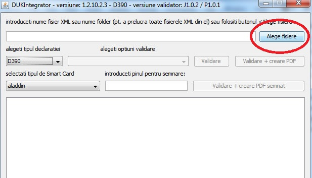
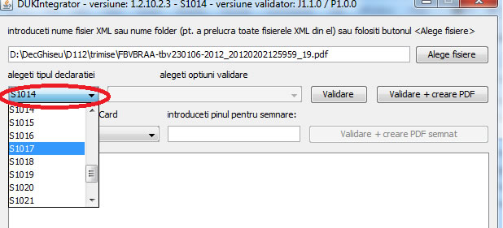
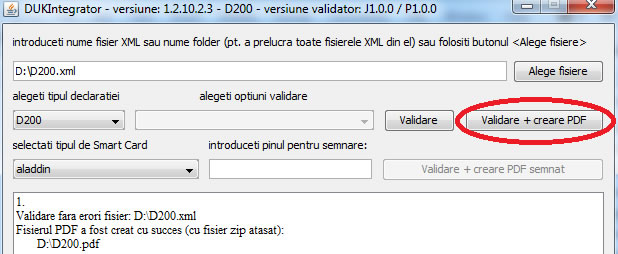
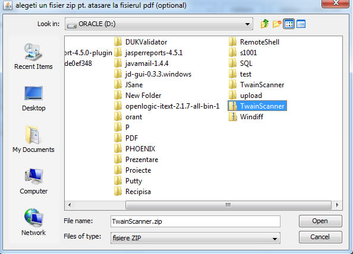

ATENTIE! Fisierul PDF este creat doar daca fisierul XML este valid !
Pentru a valida un fisier XML si crea fisierul PDF:


Dati click pe butonul "Validare + creare PDF":

Daca la declaratie / situatie financiara se poate / trebuie adaugat si un fisier ZIP, va apare urmatoarea fereastra:

Dati click pe Open si fisierul ZIP va fi atasat automat la PDF.
Pe ecran va apare un mesaj care arata daca crearea PDF-ului a reusit.
ATENTIE ! Erorile de la validarea XML-ului, daca este cazul,vor fi scrise in fiserul indicat pe ecran (.err.txt)